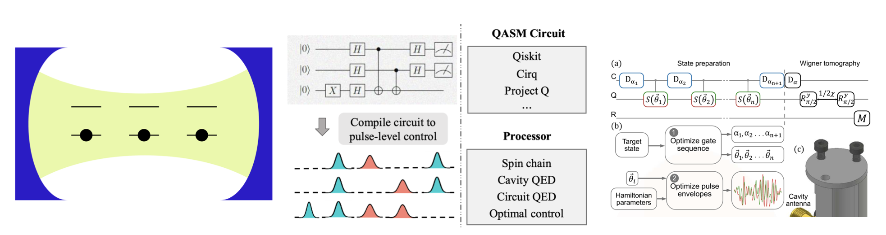
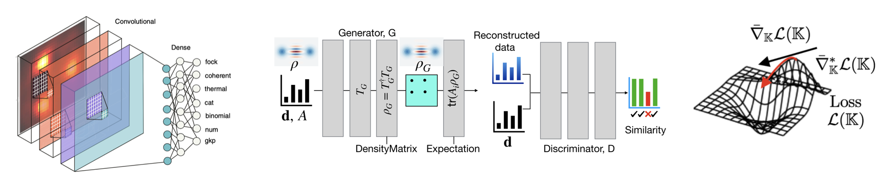
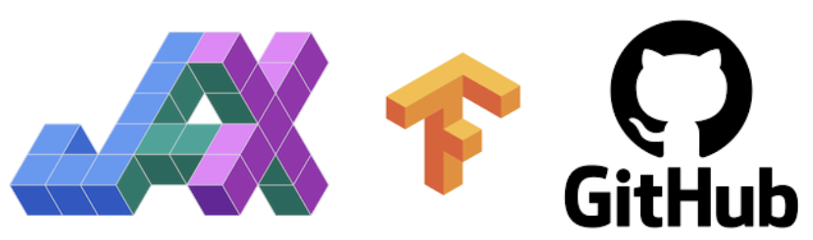
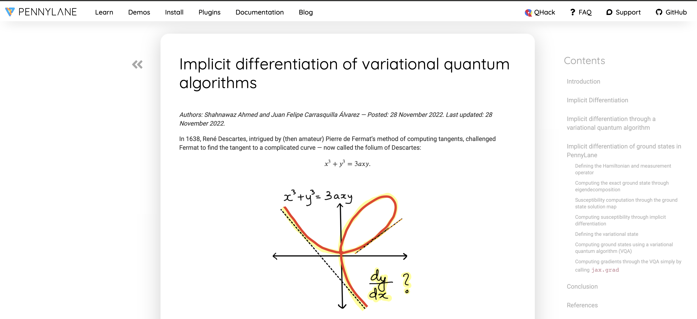

# Shahnawaz Ahmed shahnawaz.ahmed95@gmail.com Full CV: [sahmed.in/cv](www.sahmed.in/cv/) Twitter: [quantshah](http://twitter.com/quantshah) GitHub: [quantshah](github.com/quantshah) [Google scholar](https://scholar.google.com/citations?user=2WJXw9YAAAAJ&hl=en) --- ## EDUCATION <font size = 6> - [Chalmers University of Technology](https://www.chalmers.se/en/centres/wacqt/Pages/default.aspx), Göteborg, Sweden Ph.D candidate in machine learning for quantum information and computing | Oct 2018 - Sep 2023 - [Birla Institute of Technology and Science (BITS) Pilani (Goa)](https://www.bits-pilani.ac.in/goa/), India Dual degree in Physics (M.Sc.) and Electrical & Electronics Engineering (B.E.) | 2013 - 2018 </font> --- ## SKILLS <section> <span style="font-size:36px"> - Modelling, simulation and optimization for scientific computing problems specializing in quantum information and computing. <p align="center"></p> </section> <section> - Gradient-based optimization with a focus on custom deep-neural-network architectures, optimization on manifolds, Bayesian estimation, and Gaussian processes. Also familiar with reinforcement learning and Markov Decision Processes. <p align="center"></p> </section> <section> - Python programming with in-depth knowledge of scientific computing and machine learning tools, continuous integration, release cycle management, automation with GitHub actions, and Sphinx documentation. <p align="center"></p> </section> <section> - Data visualization, presentation of complex research concepts through talks, scientific manuscripts as well as code-based tutorials. <p align="center"></p> </section> </span> --- ## EXPERIENCE - Chalmers, Sweden | Ph.D. | 2018 - 2023 - Xanadu Quantum Tech, Canada | Intern | 2022 - Quantum Toolbox in Python [QuTiP](https://www.qutip.org) | 2016 - Now - Cluster for Pioneering Research, Riken, Japan | Master thesis | 2017 - Ritsumeikan University, Japan | 2016 - Summer of code, Google | 2016 --- ## OPEN SOURCE <span style="font-size: 30px;"> - [gd-qpt](https://github.com/quantshah/gd-qpt): Gradient desecent quantum process tomography (with JAX), 2022 - [qst-cgan](https://github.com/quantshah/qst-cgan): Quantum state tomography with conditional GANs (with TensorFlow), 2022 - [qutip-tensorflow](https://github.com/qutip/qutip-tensorflow): Tensorflow backend for QuTiP (Google Summer of Code project mentor), 2021 - [qgrad](https://github.com/qgrad/qgrad): Quantum simulation in JAX for autodiff, (developer and mentor for Google Summer of Code project), 2020 - [matsubara](https://matsubara.readthedocs.io/en/latest/): Hierarchichal Eq. of motion solver for quantum dynamics, 2020 - [make-your-code-count](https://github.com/nathanshammah/make-your-code-count): A guide to building open-source scientific computing projects, 2019 - [piqs](https://github.com/nathanshammah/piqs): Permutational Invariance Quantum Solver for Lindblad open quantum systems (co-developer), 2018 </span> --- ## TEACHING <span style="font-size: 30px;"> - Learning from data ([TIF285](https://cforssen.gitlab.io/tif285-book/content/Intro/welcome.html)) | Teaching assistant | Chalmers University of Technology | 2019, 2020, 2021, 2022 <!-- - Master's level course taught by Prof. Christian Forssén on methods to perform scientific data analysis using Bayesian statistical inference and machine learning. Developed various term projects on neural-network applications to science. --> - Applied machine learning | Teaching assistant | Chalmers University of Technology | 2019, 2020, 2021 <!-- - Master's level course taught by Prof. Richard Johansson focusing on applied machine learning with Python. --> - Advanced simulation and machine learning | Teaching assistant | Chalmers University of Technology | 2020, 2021, 2022 <!-- - Master's level course by Prof. Andreas Ekström on advanced topics in machine learning, e.g, Gaussian processes, Bayesian regression. --> - Deep machine learning and reinforcement learning | Teaching assistant | University of Gothenburg | 2020, 2021 <!-- - Evening course by [Prof. Mats Granath](https://www.gu.se/en/about/find-staff/matsgranath) focusing on basic machine learning concepts and Python-based implementations of deep and reinforcement learning. --> - Quantum capsule neural networks | Master thesis supervision | Chalmers University of Technology | 2020 <!-- Supervised a master thesis by Sieglinde Bogaert, a student of the Erasmus Mundus Nano program in collaboration with KU Leuven on the topic of quantum neural networks. I conceived the idea and supervised the thesis with Dr. Anton Frisk Kockum. --> </span> --- ## TALKS AND PRESENTATIONS <span style="font-size: 30px;"> - QTML [Invited speaker](https://quasar.unina.it/qtml2022/talks.php): ML for quantum states and operations: from neural networks to optimization on a manifold, 2022 - ML(QC)2: [Quantum process tomography with gradient descent](https://indico.fysik.su.se/event/7771/contributions/11921/), 2022 - APS March Meeting: Deep neural networks for quantum state characterization, 2021 - QTML: Classification and reconstruction of optical quantum states, 2020 - FOSDEM: [Make your code count: Quantum simulations and collaborative code development](https://archive.fosdem.org/2019/schedule/event/make_your_code_count_quantum_simulations_and_collaborative_code_development/), 2019 - Nature Blogs: [The rise of open source in quantum physics research](https://physicscommunity.nature.com/posts/the-rise-of-open-source-in-quantum-physics-research), (2019) - PyData, Poland: Bit to QuBit: Data in the age of quantum computing, 2018 - CQIS: Make your code count: Developing open-source quantum simulation tools, 2018 - Beyond Digital Computing symposium (awarded travel scholarship): Solving Sudokus with neural networks, 2018 </span> --- ## PUBLICATIONS 13 publications in various journals: - Nature Communications - Physical Review Letters - Quantum - Physical Review Research - Physical Review A